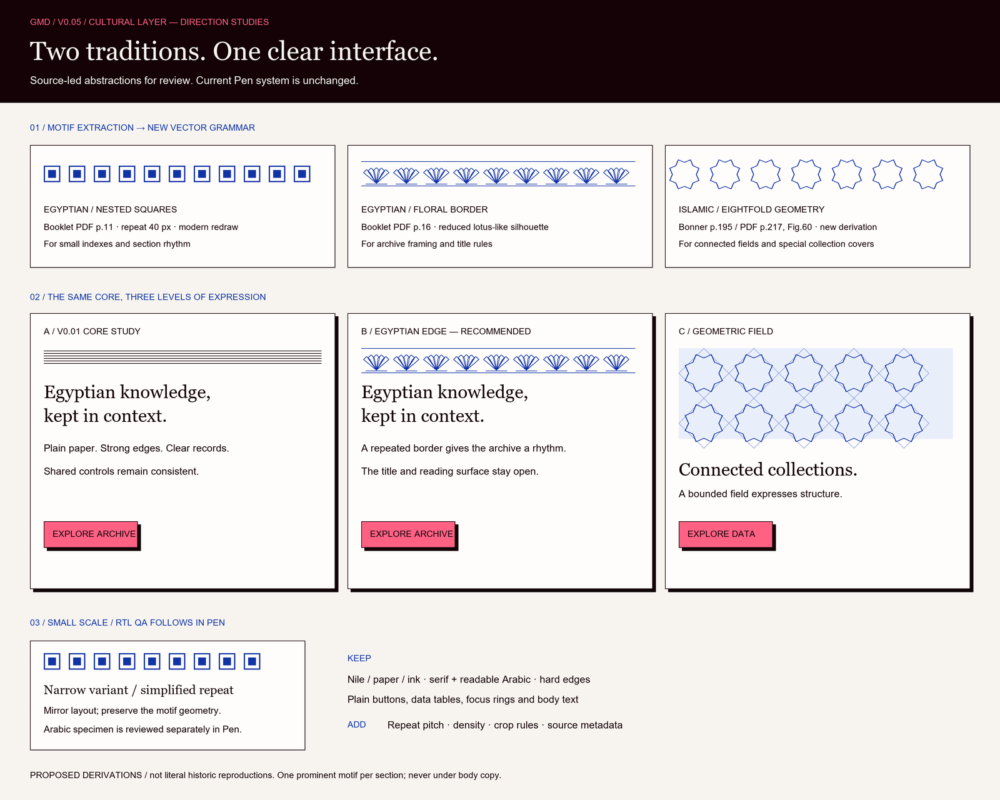

GMD v0.05: cultural layer proposal
Planning schematics before copying the editable Pen system. Recommendation: Egyptian floral edges for recurring sections, bounded Islamic geometry for expressive knowledge fields, plain controls and reading surfaces.

Editable SVG studies
Original simplified derivations; the preview uses schematic fonts rather than the Pen font masters. Exact tile seams, corner variants, Arabic shaping and actual component integration follow after direction review.